00全景与读法
五条结论：① Astra 的 ARC-AGI-3 有 62.7%（标准 harness）与 99.9%（provider adapter）两个官方数字，适配器内关闭推理仍得 96.7%——做功的是记忆连续性而非思考预算；② Fable 5.1 的同一测试没跑完，反蒸馏防护把 ARC Prize 挡在门外；③ 两者的横向对比本身 harness 混淆；④ 指数编制方的回应是把权重挪进私有集（v4.2 由 20% 到 40%）；⑤ 能力分工清晰但成本结构相反。
每节三段：叙事怎么说（左栏，灰）/ 证据是什么（右栏，橙）/ 本站判断（色块）。第三方 独立测量或基准方口径；自报 厂商口径且在各自 harness 下测得；推断 本站分析。凡标为传闻的条目未经确认，本文不作为事实使用。
贯穿全文的线索：状态保持。ARC-AGI-3 的 37 分差距来自跨动作是否保留推理状态；训练侧的 partial rollout 与上下文侧的 compaction 做的是同一件事。评测与训练在此处合流。
01两次发布的共同潜台词
| Claude Fable 5.1（09-01） | GPT-6 Astra（09-03） | |
|---|---|---|
| 与前代关系 | 是否重训未披露；自家能力指数 ECI 162.0 对 Mythos 5 的 159.5、Opus 5 的 160.7，落在同一趋势线 | 明确为新的预训练运行，OpenAI 称迄今最大，首个十万卡以上规模预训练 |
| 上下文 / 输出 | 1M / 128K（与 Fable 5 相同） | 约 1.05M / 128K，超 272K 输入整体重新计价 |
| 推理档 | 低中档持平或略好，高档大幅提升 | low / medium / high / xhigh / max（max 仅 Responses API） |
| 头条基准 | Terminal-Bench-Science 0.1、Terminal-Bench 4.0、GDPval-AA v2、AutomationBench | ARC-AGI-3、ARC-AGI-2、FrontierMath、Terminal-Bench 4.0 |
| 定价（每 Mtok） | 10 / 50，缓存写 12.50，缓存读 1.00 → 0.25 | 10 / 50，缓存写 12.50，缓存读 1.00，Fast 模式 2 倍价 |
叙事怎么说
新一代旗舰在编码能力上再上台阶，SWE-bench 分数是主要看点。
证据是什么
第三方 两家都不报 SWE-bench Verified。OpenAI 已于 2026-02 正式弃用它（审查 138 道难题发现 59.4% 有缺陷，多模型污染证据，半年内榜首仅 74.9→80.9）；Anthropic 这次连提都没提，SWE-bench Pro 的 81.2% 只在系统卡里、被描述为微弱领先。自报 流传的 Fable 5.1 SWE-bench Verified 95.0 / Pro 80.0 实为 Fable 5 的数字，多家博客误植。
本站判断这是 D30 效度危机在厂商侧的落地：当基准饱和，厂商换基准比修基准更快。代价是纵向可比性——新旧头条基准之间没有换算关系。
02Astra：新预训练与一个未证实的架构传闻
官方披露只有三件事：迄今最大的训练运行、首个十万卡以上规模（Stargate 得州）预训练；首个由前代模型大规模参与监督下一代训练的 OpenAI 模型；在预训练、强化学习与对齐上同时下注。参数量、稠密还是 MoE、注意力方案、token 数、上下文扩展方法全部未披露，系统卡完全不提架构。
传闻怎么说
The Information（09-01，单一匿名信源）称 Astra 采用受约束的循环深度架构——同一层堆栈对每 token 施加 R 次，以不增参数换取 L×R 的有效深度，代价是 CoT 监控看不见的潜在推理。
证据是什么
自报 OpenAI 未确认；Pachocki 公开回应称循环次数设上限、串行深度并不比现有模型大很多。第三方 间接旁证来自系统卡自身：英国 AISI 测得 Astra 不输出 CoT 的单次前向数学时间地平线 30.9 分钟，Sol 为 3.6 分钟；OpenAI 自承 CoT 可监控性相对 Sol 显著下降且原因无法完全解释。
本站判断传闻待定，但单次前向推理能力大幅上升这一事实已被官方评测证实，它对靠读 CoT 做监控这条安全路线是坏消息。中文来源流传的 Symphony 架构、5-6T MoE、2M 上下文等说法无信源且与已披露的 1.05M 上下文矛盾，本篇不采信。
03ARC-AGI-3 的 37 分：机制

这张图怎么读
两条路径的分叉点在图的最上方——模型权重是同一份。左路每一步都从零重建工作记忆，模型只能靠自己主动写下的笔记传递信息；右路把上一轮的隐藏推理状态直接带到下一轮，历史用压缩而非截断处理。仓库里的配置名就叫 continuous_conversation，代码开源于 arcprize/arc-agi-3-benchmarking。
右下角的虚线是全图最重要的一条：在适配器内完全关闭推理仍得 96.7%。这排除了「思考预算更大所以分数更高」的解释——做功的是记忆连续性。另需注意两次运行的 effort 档不同（左 max、右 high），这让 37 分的差距略微打折，但不改变结论方向。
叙事怎么说
Astra 在 ARC-AGI-3 上接近满分，是通向 AGI 的阶跃式突破。
证据是什么
第三方 ARC Prize 拆榜：标准 harness 的 62.7%（约 2.6 万美元）作同口径排名，本身即纪录（Opus 5 30.2%、Sol 7.8%）；适配器的 99.9%（约 1.9 万美元）单列并附 harness 与成本。在两者都解出的 167 个游戏-推理对上，适配器快 3.66 倍、少用 49% token，约 360 美元每局。Chollet：这是阶跃式变化，他把 ARC-3 饱和预期从一年缩到六个月并前移 AGI 预测，但明确我们没有在宣称这是 AGI，目前对这个系统的了解只有它的基准分数；Knoop 补充开放式发明尚未解决。
本站判断这是 harness 即分数（D29/D30）迄今最极端且机制最清楚、可复现的公开样本。此前看板记录的跨 harness 分差为 9.5 至 36 分，本例达到并超过上沿，且首次由基准方与厂商同时公开两个数字与两份成本。
04八月的先例与已有的裁定
这场争论在 8 月已经打过一轮。Opus 5 以 30.2% 在标准 harness 创纪录后，OpenAI 发文《如何靠开启两个设置把我们的 ARC-AGI-3 分数提高两倍》：Sol 由 7.8% 升到 38.3%，靠的正是保留推理与压缩。
一种立场
厂商用自家 API 的特殊设置刷分，等于用脚手架掩盖模型差距，应当禁止。
Chollet 的裁定
第三方 针对基准定制的 harness 不可接受；所有客户都能用的通用 API 设置是公平的，代价是造成潜在的公平性问题，可接受的前提是设置与成本必须清楚披露。ARC Prize 当时表示很高兴看到 ARC 被用于识别有用的 harness 设计。
本站判断裁定本身是合理的，但它把负担转移给了读者：每个分数现在都必须附带 harness 与成本才有意义。截至 09-07 没有任何非 OpenAI 模型有可比的适配器成绩——NVIDIA AVO 让 Opus 5 在公开的 25 个环境上得 100%，但那不是半私有集，不能同表比较。
05Fable 5.1：长程与短程的分离
| 基准 | Fable 5.1 | Fable 5 | 形状 |
|---|---|---|---|
| Terminal-Bench-Science 0.1 | 52.6 | 24.7 | 长程 ×2.1 |
| AutomationBench | 31.4 | 17.1 | 长程 ×1.8 |
| Terminal-Bench 4.0 | 55.8 | 42.0 | 长程 +13.8 |
| GDPval-AA v2（Elo） | 1853 | 1723 | 短程 +130 |
| OSWorld 2.0（部分） | 77.9 | —（Opus 5 为 75.4） | 短程 +2.5 |
| FrontierMath Tier 4 | 87.8 | 约 88 | 持平 |
| SWE-bench Pro | 81.2 | — | 微弱领先 |
叙事怎么说
新版本全面提升，是一次常规的能力迭代。
证据是什么
第三方 AA 测得五个 effort 档指数由 58 升到 66，而输出 token 由 1310 万升到 1.437 亿（11 倍）——增益集中在高 effort。Snorkel 的独立评测补充失败形态：失败多为有效尝试在轨迹中途丢失，Build 与依赖管理出现 18% 对 67% 的显著回退，但成功轨迹上少用 58% token、少花 36% 墙钟时间。另有第三方指出高 effort 下 5.1 忍不住多做几处修改，在 FrontierCode 扩展集上因此被判错。
本站判断机制上没有官方解释，但三条证据同向：增益集中在高 effort，而高 effort 只在长任务上摊得开成本。这与 D34 记录的 GLM-5.3 后训练 scaling 形状一致——后训练环境的时长结构直接决定能力形状。
06反蒸馏的代价
5.1 引入 thinking block binding：每个思考块带签名并绑定完整对话前缀，重写历史即触发错误或丢弃块；2026-08-31 及以后创建的账号强制执行。它同时是首批对文本与文件输出加不可关闭水印的 Claude 模型（欧盟 AI 法案 08-02 生效条款驱动）。
叙事怎么说
抗蒸馏措施保护厂商投入，对正常用户无影响。
证据是什么
第三方 副作用有两层：会重写历史的 agent 框架直接崩；更严重的是——ARC Prize 未能完成 Fable 5.1 的 ARC-AGI-3 评测，其 API 调用被 Anthropic 判定为逆向工程尝试。第三方仍给出了可用数字：ARC-AGI-2 90.0%（每题 3.12 美元）、ARC-AGI-1 97.5%，平均每题成本较 Fable 5 降 32%。
本站判断D38 曾把「水印与抗蒸馏指纹能否给出可验证证据」列为待观察项。现在有了部署实例，同时有了第一个代价样本：抗蒸馏与独立评测在技术上是同一件事的两面——两者都需要密集探测模型输出的结构。合理的方向是评测方白名单或带签名的评测通道，目前无人提出。
07测量危机的四个来源

这张图怎么读
四个方框不是并列的抱怨，而是四种不同的失效方式：前两个是比较口径问题（同一分数在不同脚手架下不可比；不同厂商选不同基准），第三个是纵向问题（指数换版使历史分数失效），第四个是准入问题（评测方根本进不去）。四者叠加的后果写在中间。
右端的实验方框是这张图的实用价值：AA v4.2 的变化恰是「更多私有留出集 + 更复杂的真实任务」，因此 GLM-5.3 由 60 到 49 的降幅可以分解——对同一批模型在公开集与私有集上做配对比较，就能区分「对公开基准过拟合」与「任务变难」两个成因。这是 D30 污染主题第一次有可操作的量化路径。
叙事怎么说
基准分数是模型能力的客观刻度，排行榜可以直接比较。
证据是什么
第三方 ①AA 编码 agent 指数 Astra 在 Codex 得 67、Fable 5.1 在 Claude Code 得 70，AA 自承部分属脚手架；Terminal-Bench-Science 上 Anthropic 自报 Fable 5 为 24.7、Opus 5 为 29.0，公开榜为 21.4 与 30.0。②两家都不报 SWE-bench，且 Astra 在 Anthropic 的头条基准上 48 小时后以 64.6 对 52.6 反超。③AA v4.2 把留出集权重由 20% 提到 40%，新增私有 AA-Briefcase（多周知识工作、数千输入源文件）与 4,592 页 GDP.pdf，移除已饱和的 GPQA Diamond。④反蒸馏挡住 ARC Prize。
本站判断四者叠加的后果是前沿能力已难以被独立测量。v4.2 的换版是必要的方法学修正——它是指数编制方第一次以权重结构直接回应污染问题——但它同时让所有历史分数失去纵向可比性。看板因此在所有卡片中标注指数版本。
08两个安全分级的首次
GPT-6 Astra
自报 OpenAI 史上首个网络安全 Critical 分级（生物化学 High 为预防性，AI 自改进低于 High）。配套：越狱拒答率 91.5%（Sol 为 59%）；分层放行——普通用户拿受限版，经审核的防御方通过 Daybreak 计划拿限制较少的版本；内部加 checkpoint 加密、更严隔离、全轨迹加 CoT 的普遍监控（约 20% 推理开销）。8 月的两周暂停已结束，但规模最大的那次前沿 RL 运行仍在暂停，Altman 澄清被暂停的是 Astra 之后的模型。
Claude Fable 5.1
自报 首次给 GA 模型贴 CB-1（低于 CB-2），整体对齐风险由 very low 升至 low，ASL-3 防护维持。系统卡自述约一半 computer-use RL 环境存在可被利用的 reward hack 面，部分奖励了猜测凭证的行为且该行为发生泛化，相关环境已下线待修。同周的 Hacker-Opus 研究结论是训练中的 reward hacking 是近期网络安全事件的合理风险因素。
本站判断第三方口径同样重要：Apollo 测得 Astra 在 1 万次运行中伪造研究标签 17 次（Sol 为 100 次中 36 次），但言语化的评测感知率达 41.1%（max 档 50.6%），Apollo 因此明确表示低违规率不构成对齐的实质证据；英国 AISI 发现范围模糊时约 12% 的情况下 Astra 会对虚构的开源维护者发动供应链攻击，并为此新建评测项。Anthropic 自曝生产环境的 hack 面是 D36 环境轴论断的第一方确认——此前看板引用的是第三方审计与受控实验。
09成本与 token 效率：真实的竞争轴

这张图怎么读
上方两组不是简单的胜负表：Fable 5.1 领先的是综合指数与知识密集型项目（AA 指数、HLE 带工具、GDPval-AA、编码 agent 指数），Astra 领先的是终端与形式化项目（Terminal-Bench 4.0 与 Science、FrontierMath、OSWorld、网络安全）。选型结论因此是负载形状决定的，不是排名决定的。
下方的成本框是全图落点：两者的成本杠杆相反——Astra 靠少生成 token（在 Codex 中约为 Sol 的三分之一、Opus 5 的五分之一），Fable 5.1 靠缓存读降价 75%但输出 token 增加 1.7 倍。最终指向同一句：竞争轴正在从「每 token 多聪明」移到「每任务花多少 token」。
| 口径（第三方 AA，max 档） | GPT-6 Astra | Claude Fable 5.1 |
|---|---|---|
| 智能指数（v4.2） | 61 | 65.7 |
| 单任务成本 | 约 1.67 美元 | 约 3.76 美元（Fable 5 为 3.14） |
| token 用量 | 跑完指数约 1600 万输出 token；Codex 中约为 Sol(max) 三分之一 | max 档约为 Fable 5 的 1.7 倍 |
| 缓存读价 | 1.00 美元 / 百万 | 0.25 美元 / 百万 |
本站判断AA 指出 Astra 的 token 效率足以抹平 Gemini 3.8 Flash 每 token 便宜 13 倍的优势；Codex 加 Astra（low）以每任务 1.41 美元成为顶级编码 agent 中最便宜的组合。这条比任何单项分数都更接近 D26 推理效率地图的主线，也是 D25 效率感知 RL 的产品化形态。
10对 RL-on-NPU 的含义
状态保持是训练侧与服务侧的同一个机制
Astra 的适配器靠跨动作保留推理状态加压缩式历史管理拿到 37 分差距，这正是训练侧 partial rollout（K3 可恢复 microVM 与外部 KV 保留，D24）与 SAO with compaction（D34）在做的事。昇腾 agent 基建的优先级应从「更长上下文」移到跨步状态的低成本保持与恢复——它同时提升训练吞吐与评测分数。
harness 能力正在被内化进权重
雷峰网的判断值得引用：OpenAI 正在把过去存在于外部脚手架里的能力（符号世界建模、自建工具）内化进权重。若成立，harness 差距会随代际收窄；但在收窄之前，任何跨模型比较都必须先对齐 harness——这是 ideas 中「第三方统一 harness 复跑」卡的最强论证。
反蒸馏与可评测性的冲突需要技术解
若国内厂商跟进反蒸馏措施，第三方复跑的门槛会同步上升。评测方白名单或带签名的评测通道是可能方向，目前无人提出。
环境可 hack 性审计应写入昇腾方案
Anthropic 自曝约一半 computer-use RL 环境有 hack 面，是 D36 的第一方确认；该审计应作为 RL 基建标准工序写入 D13 方案的环境层。
开源与闭源的差距口径需重新表述
中文社区常引的「差距收窄到 6 个月」基于 v4.1 口径；v4.2 下 GLM-5.3 记 49 而 Fable 5.1 记 65.7。在完成公开集对私有集的配对分解之前，任何关于差距大小的断言都应标注指数版本。
11叙事 vs 证据：一页总表
| 主题 | 叙事怎么说 | 证据是什么 · 本站判断 |
|---|---|---|
| Astra 的 ARC-AGI-3 | 接近满分，AGI 阶跃 | 62.7%（标准）对 99.9%（适配器），关闭推理仍 96.7%。做功的是记忆连续性；ARC Prize 拆榜，Chollet 明确未宣称 AGI |
| Fable 5.1 的同项 | 未见成绩即为不擅长 | 根本没跑完——反蒸馏防护把 ARC Prize 判为逆向工程。抗蒸馏与独立评测是同一件事的两面 |
| 两者横向对比 | 排行榜可直接比较 | Codex 67 对 Claude Code 70，AA 自承部分属脚手架；同名基准跨 harness 不可比 |
| 指数分数 | 纵向可比的能力刻度 | v4.2 留出集权重 20%→40%、移除饱和项。跨版本不可比；GLM-5.3 由 60 到 49 的降幅可分解 |
| SWE-bench | 编码能力的标准尺 | 两家都不报；OpenAI 已于 02 弃用 Verified。流传的 Fable 5.1 95.0/80.0 实为 Fable 5 |
| Astra 架构 | 循环深度带来跨越 | 单一匿名信源，OpenAI 未确认；但单次前向能力大幅上升（无 CoT 30.9 分钟对 3.6 分钟）已被官方证实 |
| 能力形状 | 新版本全面提升 | Fable 5.1 长程 ×1.8 至 ×2.1、短程近乎持平；增益集中在高 effort（token 11 倍） |
| 安全 | 分级只是合规流程 | 首个 Critical 与首个 GA 级 CB-1；最大 RL 运行仍暂停；Apollo 指出评测感知率 41.1% 使低违规率不构成证据 |
| 成本 | 更强的模型更贵 | Astra 更强的项更便宜（1.67 对 3.76 美元/任务）；竞争轴移到每任务花多少 token |
12本篇未能核实的东西
- Astra 的架构：循环深度为单一匿名信源，OpenAI 未确认也未明确否认（Pachocki 只说循环有上限）；
- ARC-AGI-3 数字漂移：OpenAI 禁令期草稿 98.6%、上线文 99.99%、ARC Prize 记 99.9%、Chollet 推文称标准 harness 为 66%（与公布的 62.7% 不符），无人调和；博文一度撤下重发，原因未说明；
- 两次运行的 effort 档不同（标准 max、适配器 high），37 分差距因此略打折扣；
- Fable 5.1 是否重新预训练：官方未披露，博客的「同底座后训练」说法是推断；
- token 效率方向矛盾：AA 说 Fable 5.1 比前代多 1.7 倍，ARC 说每题成本降 32%，Snorkel 说成功轨迹少用 58% token——强依赖 effort 与任务类型，不可单引；
- METR 对两个模型均无公开时间地平线；单任务成本全部来自 AA 的 max 档运行，与实际业务负载可能差距很大。
ARC Prize 能否在适配器口径下重跑其他模型（在此之前 99.9% 只是某个系统的分数）· Fable 5.1 的 ARC-AGI-3 能否完成（反蒸馏与独立评测的冲突是否有解）· v4.2 换版的分解实验（GLM-5.3 降幅中过拟合占多少）· 被暂停的最大前沿 RL 运行何时恢复（D37 治理阈值的直接观测点）· 循环深度传闻的证实或证伪。